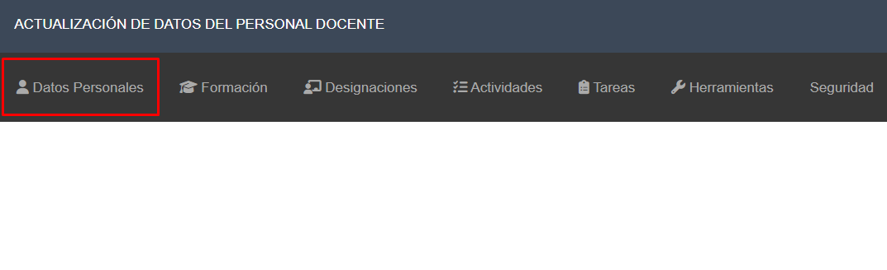
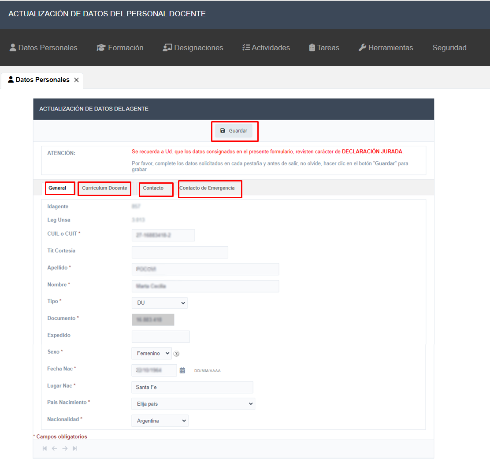

Una vez que ingrese al sistema, verá en pantalla la siguiente interfaz. Ingrese al ítem “Datos Personales”
Revisar y controlar sus datos personales en cada pestaña: General, Curriculum Docente, Contacto y Contacto de Emergencia En caso de actualizar su información hacer clic en el botón Guardar
En la pestaña Curriculum Docente, según especifica CONEAU Global: Cada docente que se vincule con las carreras que se presentan a acreditación, deberá crear su cuenta en CONEAU Global y completar su currículum. Los docentes podrán completar el Currículum CONEAU, o bien utilizar el currículum unificado CVar. En el siguiente enlace tiene disponible, un instructivo de carga del CV en CONEAU Global. Para acceder al mismo, haga click aqui